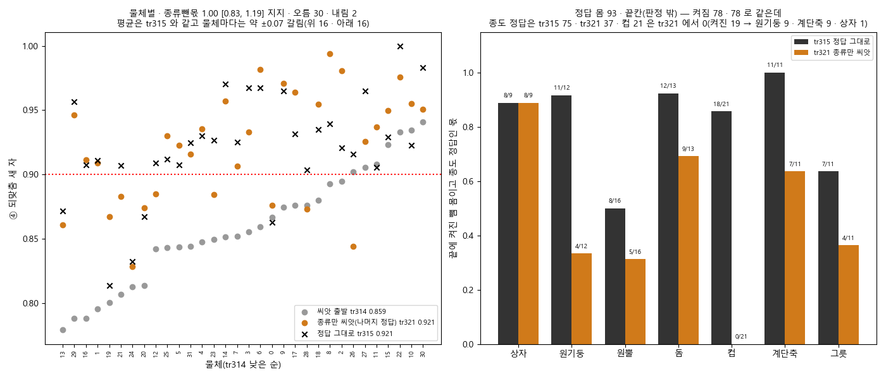

실험 m2_tr0321_h074_종류만씨앗
목표 G1.2 view 모음 → 파츠별 CAD code(CadQuery · 그 전 「3 면도 → 파츠별 CAD」 · 지금 M2 는 위 · 앞 · 옆 고정 세 장만 받음 → 아무 각도 N 장으로 바꿀 것 · 11-20) · G1 첫 제품 — 피규어 · 메카 사진 여러 장 + 치수 → 숨은선 3 면도 + 파츠별 CAD · G0 임의의 이미지 → CAD 코드 · 빌린 가정 5: 정사영 · 시점앎 · 흰바탕 · 렌더화풍 · 정답3D · 갚는 계획: 진단 · 정답 만들기 — 껍데기를 그릴 어휘가 정해지면 그 어휘로 CAD code 정답 변환(m2 학습 · 비교는 그 뒤 카드) · 목표 시험지 값: 안 잼 (!)
tr315 의 ④ 오름은 종류 없이도 나오나 — 종류만 지금 씨앗 규칙(logit 0)으로 두고 몸 수 · 자리 · 축 · 크기를 정답으로 주면 오름의 몇 할을 되찾나?
| 가설 | 주장 | 결과 | 근거 |
|---|---|---|---|
| m2-H74 | tr315 오름은 종류 없이도 나온다 — 종류만 지금 씨앗 규칙이고 나머지가 정답이면 tr315 오름의 70 % 이상을 되찾는다 | 지지 | S6 합성 정답 32 · 정답 뺌 몸 그대로에 종 logit 만 0 ④ 되맞춤 새 자 평균 0.9214(tr314 0.8588 · tr315 0.9214 · 반올림 전 0.92141 대 0.92136) · 종류뺀몫 0.9993(≥ 0.7 → 지지) · 구간 [0.8323, 1.1927] · 넷차 +0.0626 구간 [0.0466, 0.0771] · 오름 30 · 내림 2 · 물체별 차 중앙값 +0.073 · 0.9 넘은 물체 22/32(tr314 7 · tr315 27 · 새로 넘음 16 · 떨어짐 26) · 가장 큰 오름 29 +0.1579 · 16 +0.1233 · 6 +0.1225 · 내림 26 −0.0583 · 28 −0.003 · 최소 0.8286 · 대 tr315 위 16 · 아래 16 · 차 −0.072 ~ +0.060 · 뺌 찾음 63/93(tr314 28 · tr315 74) · 남은 뺌 몸 평균 2.5 · 하네스 실패 0 · CAD 안 끝남 0 · 조용한 실패 0 · 판 폴더 0.07 GB · 끝 단계 26.9 분(13:46:08 → 14:13:01 · tr323 GPU 단계와 겹침) · 판정 밖(b321분석 · rv321b · 정답 칸 T.K−1−u): 끝칸 켜진 정답 몸 tr315 78 · tr321 78 · 종도 정답 75 · 37 · 가운데 0.1 안 72 · 61 · 끝 단계 앞(고른 출발) 93 켜짐 · 종 정답 90 · 37 · 가지치기 93 → 78 · R7 정답 칸 종 바뀜 1 · 종별(tr321 종 정답/정답 몸) 상자 8/9 원기둥 4/12 원뿔 5/16 돔 9/13 컵 0/21 계단축 7/11 그릇 4/11 · 켜진 컵 19 → 원기둥 9 · 계단축 9 · 상자 1 · 자취 정답 종 몫 첫 걸음 뒤 0.545 → 1,150 0.374(16 출발 · 고른 출발 0.57 → 0.38) · 첫 걸음 뒤 컵 0 칸 |
결정 표(돌리기 전에 정함)
- 만약 지지
다음 종류는 주된 원인 아님 - 만약 기각
다음 종류가 다른 성분과 함께일 때 필요 — tr317(혼자는 안 오름)과 같이 보고 종 고르기 카드 - 만약 약함
다음 섞임 — 숫자 그대로 적고 사용자와 고름
분석
한 줄로
물음: tr315 에서 뺌 몸을 정답 그대로 출발시키자 관문 ④ 가 0.8588 → 0.9214 로 올랐다. 그 오름은 종류 없이도 나오나? 종류만 지금 씨앗 규칙으로 두고 몸 수 · 자리 · 축 · 크기를 정답으로 주면 오름의 몇 할을 되찾나?
답: 오름을 다 되찾았다(종류뺀몫 1.00 · 구간 [0.83, 1.19]). 평균은 0.9214 로 tr315 와 소수 넷째 자리까지 같다(반올림 전 0.92141 대 0.92136). 몫이 지지 선(0.7) 위라 판정은 지지다. 결과 전에 적은 예측도 지지였다. 끝에 켜진 정답 몸 78 개 가운데 종까지 정답인 몸은 37 개뿐이다(tr315 는 75 개 · 판정 밖).
왜 이 실험을 했나
우리 목표는 메시를 부품 CAD 코드로 바꾸는 것이다. 이 판들은 그 정답을 만드는 변환이 얼마나 충실한지 본다. tr317 에서 종류만 정답으로 줘서는 오르지 않았다(몫 −0.05). 이 판은 사용자가 고른 A 네 판 가운데 둘째(A2)다. 반대로 종류 하나만 빼고 나머지를 모두 정답으로 주면, 종류가 오름에 얼마나 몫을 하는지 알 수 있다.
낱말 몇 개를 먼저 풀어 둔다.
- ④ 는 본 판 전에 거치는 관문이다. 뺌 어휘로 직접 만든 합성 정답 32 개(물체 0 ~ 31)를 같은 맞춤으로 다시 맞춰(되맞춤) 정답을 되찾는지 본다.
- 뺌 몸 은 더한 몸에서 파내는 몸이다. 종류는 일곱 가지다(상자 · 원기둥 · 원뿔 · 돔 · 컵 · 계단축 · 그릇).
- 씨앗 규칙 의 종류는 일곱 종의 점수(logit)를 모두 0 으로 두어 섞인 채 출발하는 것이다. 맞춤이 어느 종으로 갈지 스스로 고른다. 다만 크기 값 아홉 개는 정답 종의 뜻대로 놓인다(상자는 가로 · 세로 · 높이, 둥근 몸은 반지름 등). 그래서 이 판은 「종 정보 없음」 이 아니라 「종 점수만 없음」 이다.
- 끝 단계 는 고른 출발을 다듬는 단계다. 입력 점수가 오르면 몸을 끄거나 뒤집고(R7), 점수를 거의 안 바꾸는 몸은 지운다(가지치기).
바꾼 것 하나
tr315 처럼 정답 뺌 몸을 몸 수 · 자리 · 축 · 크기 그대로 놓고, 종류 점수만 0 으로 지웠다. 나머지는 tr315 와 같다.
결과

왼쪽 그림의 가로축은 tr314 점수가 낮은 물체부터 늘어놓은 순서다. 주황(이 판)은 거의 모두 회색(tr314) 위에 있고 검은 ×(tr315) 둘레에 흩어져 있다. 오른쪽은 정답 몸을 종별로 나눠, 끝에 켜진 뺌 몸이고 종까지 정답인 몫이다(판정 밖). 주황은 상자에서만 검정과 같고, 다른 종은 모두 검정보다 낮으며 컵은 0 이다. 막대의 분모는 켜진 몸이 아니라 정답 몸 수다.
| 종류만씨앗(이 실험) | 씨앗 출발(tr314) | 정답 그대로(tr315) | |
|---|---|---|---|
| 되맞춤 새 자 평균 | 0.9214 | 0.8588 | 0.9214 |
| 되찾은 몫 | 1.00 [0.83, 1.19] | 0 | 1 |
| 0.9 넘은 물체 | 22/32 | 7/32 | 27/32 |
| 뺌 자리 찾음 | 63/93 | 28/93 | 74/93 |
| 끝에 남은 뺌 몸(물체 평균) | 2.5 | 2.41 | 2.5 |
| 하네스 실패 · CAD 안 끝남 | 0 · 0 | 0 · 0 | 0 · 0 |
새 자는 정답 메시와 맞춘 메시의 표면 점이 서로 0.02 안에 드는 정도를 F 점수(0 ~ 1)로 잰 값이다. 거리 단위는 정답을 둘러싼 상자의 가장 긴 변을 1 로 둔 것이다. 되찾은 몫은 (이 판 − tr314) ÷ (tr315 − tr314) 다. 대괄호는 물체를 짝지어 다시 뽑은(부트스트랩 2,000 번) 95 % 구간이다.
왜 이렇게 나왔나
확인한 것
- 짝 차는 +0.0626, 구간은 [0.0466, 0.0771] 이다. 오름 30 · 내림 2, 물체별 차 중앙값 +0.073 이다. 0.9 를 새로 넘은 물체는 16 개이고, 떨어진 물체는 26 번 하나다. 가장 큰 오름은 29(+0.16), 내림은 26(−0.06) · 28(−0.003)이다.
- 물체마다 tr315 와 견주면 위 16 · 아래 16 이고, 차는 −0.072 ~ +0.060 이다. 평균만 같다.
- 끝칸(고른 출발 · 끝 단계 뒤 · 정답 몸을 놓은 칸 번호로 셈 · 판정 밖): 정답 몸 93 가운데 켜진 뺌 몸은 tr315 78 · 이 판 78 이다. 그중 종까지 정답은 tr315 75 · 이 판 37 이다. 가운데가 정답에서 0.1 안인 몸은 tr315 72 · 이 판 61 이다(이 셈은 정답 칸만 본다 · 표의 찾음 63 · 74 는 아무 켜진 뺌 몸이나 보는 빼기309 셈이라 기준이 다르다).
- 끝 단계 앞(고른 출발 · 1,350 걸음 뒤)에는 두 판 모두 정답 몸 93 개가 다 켜져 있었다. 종까지 정답은 tr315 90 · 이 판 37 이다. 끝 단계에서 가지치기가 두 판 모두 15 개를 껐다(93 → 78). 끝 단계 R7 이 정답 칸의 종을 바꾼 것은 이 판에서 한 번뿐이다.
- 종별로 보면 이 판은 상자 8/9 를 맞혔고, 컵은 21 개 중 0 개를 맞혔다. 켜진 컵 19 개는 원기둥 9 · 계단축 9 · 상자 1 로 끝났다.
- 자취(부드러운 단계 · 켜짐과 상관없이 정답 칸의 종): 정답 종인 몫은 첫 걸음 뒤 0.55, 걸음 1,150 에서 0.37 이다(16 출발 모음 · 고른 출발만 보면 0.57 → 0.38). 출발 때는 점수가 모두 0 이라 모든 칸이 상자로 읽힌다. 첫 걸음 뒤 컵으로 읽힌 칸은 하나도 없다(16 출발 모음 0 칸).
짐작 (아직 확인 안 함)
- 종이 틀린 몸도 점수를 거의 잃지 않는다(잼). 끝 단계 R7 도 틀린 종 56 개 가운데 정답 종으로 바꾼 것이 거의 없다(정답 칸 종 바뀜 1 번). 까닭은 둘 중 하나로 보인다. 컵을 원기둥이나 계단축으로 바꿔도 같은 자리 · 크기로 파면 겉면이 비슷하거나, 둘째 단계(150 걸음)가 고른 종에 맞춰 크기 · 자리를 다시 맞춰 겉면을 맞췄을 수 있다. 같은 몸을 두 종으로 그려 겉면 차를 재지는 않았다.
- 그렇다면 이 자(표면 F@0.02)는 종 차이에 둔하다. 「오름에 종이 필요 없다」 는 「이 자로는 종 차이가 잘 안 보인다」 와 아직 갈리지 않는다.
- 물체마다 tr315 와 약 ±0.07 갈리는 것은, 출발이 조금 달라도 물체별 점수가 그만큼 흔들린다는 뜻일 수 있다. tr322 의 물체별 오르내림(±0.06)을 읽을 때 참고할 값이다. 다만 두 판은 종이 다르니 순수한 흔들림은 아니다.
한계
- 정답에서 몸 수 · 자리 · 축 · 크기를 빌린 진단이다. 실제 물체에 그대로 쓸 수 없다.
- 크기 값 아홉 개가 정답 종의 뜻대로 놓여 종 정보가 크기로 샌다(카드 섞임 칸에 적어 둠).
- 종 점수 0 은 섞인 출발이라, 「종 정보 없음」 과 「틀린 종」 은 다르다. 틀린 종으로 박아 출발하면 어떤지는 재지 않았다.
- 종별 · 끝칸 · 자취 셈은 판정 밖이고 결과 뒤에 셌다. 종별 몸 수가 9 ~ 21 로 작다. 끝칸 셈은 정답 몸을 놓은 칸 번호로 셌다(R7 · 가지치기는 칸을 옮기지 않음 · 정답 칸 밖에서 켜진 뺌 몸 두 판 모두 2 개는 셈에 없음).
- 판정 몫 구간이 1 을 넘는다(위끝 1.19). 몫은 tr315 대비라 tr315 의 물체별 흔들림이 분모에 그대로 들어간다.
- 한 번만 돌렸다. tr314 · tr315 를 지금 코드로 다시 돌리지 않았다.
- 끝 단계는 26.9 분 걸렸다(tr314 23 분). tr323 GPU 단계와 겹쳤고 CAD 안 끝남은 0 이다.
배운 것과 다음
종류만 지워도 오름을 다 되찾는다. 끝에 종이 맞은 몸은 절반 아래인데도 그렇다.
- 몸 수 · 자리 · 축 · 크기가 함께 정답인 이 판은 오름을 다 되찾았다(지지). 몸 수만 씨앗인 tr320 은 0.64 로 섞임이다. 그 전 판들(tr316 ~ 318)과 tr322 에서 자리 · 종 · 크기 · 축을 하나씩만 준 것은 모두 기각이다.
- 종이 맞았는지 자가 잘 못 보는지 재는 셈(같은 몸을 두 종으로 그린 겉면 차)이 후보다. 이것은 내 제안이다.
- tr323(몸 수만 정답)이 남았다. A 네 판 결과를 다 본 뒤 감시 세션이 사용자에게 다음을 묻는다. 바탕은 지금 맞춤 코드 그대로 둔다.
검토 (11-27 맥락 없는 서브 에이전트 · 보고 · 카드 · 잼 · 넷 셋 · 결과_pc.png · b321분석.py · b321.json · 그림321.py · 껍데기313 · 어휘293 · 배관2 끝() · 끝 json · 끝칸 · 칸 · 자취만 봄)
- 숫자는 모두 다시 센 값과 같음 · b321분석.py 셈 버그 없음(R7 · 가지치기는 칸을 옮기지 않음 · 정답 칸 밖 켜진 뺌 2 개는 빠짐).
- 「걸음 0」 은 출발이 아니라 첫 걸음 뒤 · 출발은 모두 상자.
- 「떨어진 물체는 26」 이 26 개로 읽힘 · 배운 것 1 에 섞임(tr320)을 「되찾은 것」 에 넣음 · A 넷과 그 전 판을 한데 묶음 · 종별 막대 묘사 과장 · 찾음 63 과 가운데 61 은 기준이 다름 · 자취 몫과 끝칸 37/78 기준이 다름.
- 그림: 「±0.07 안」(최소 −0.072) · 컵 상자 1 빠짐.
- 빠진 한계: 크기 값이 정답 종 뜻으로 놓여 종 정보가 샘(카드 섞임) · 잰 근거 안 씀(끝 단계 앞 93 켜짐 · 종 정답 37 대 90 · R7 정답 칸 종 바뀜 1) · 첫 걸음 뒤 컵 0 · 가지치기 93 → 78 · 둘째 단계가 크기를 다시 맞춘 대안 설명.
고친 줄 (검토 반영)
- 끝 단계 앞 93 켜짐 · 종 정답 37 대 90 · R7 정답 칸 종 바뀜 1 · 첫 걸음 뒤 컵 0 칸 · 고른 출발 0.57 → 0.38 은 내가 검토 스크립트를 다시 돌려 확인하고 확인한 것에 넣음.
- 짐작 1 에 R7 근거와 둘째 단계 대안 설명 · 한계에 종 정보가 크기로 샘 · 칸 번호 셈 전제.
- 26 번 하나 · 배운 것 1 판정별로 나눔 · 막대 묘사 · 찾음 기준 차 · 걸음 0 → 첫 걸음 뒤 · 그림 「약 ±0.07」 · 컵 끝 종 셋 다.